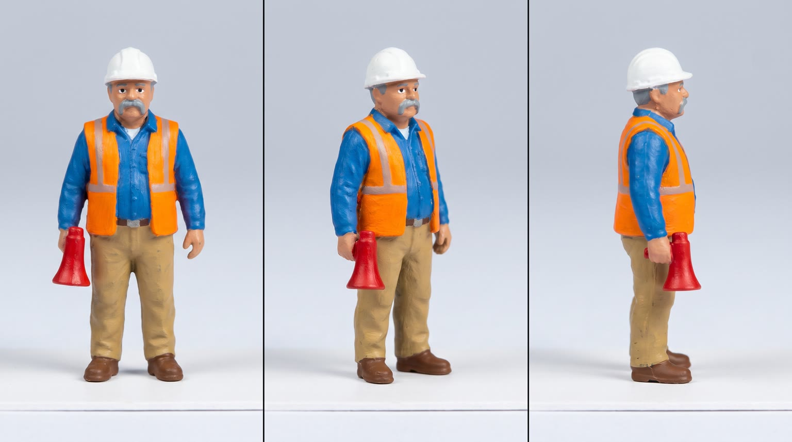
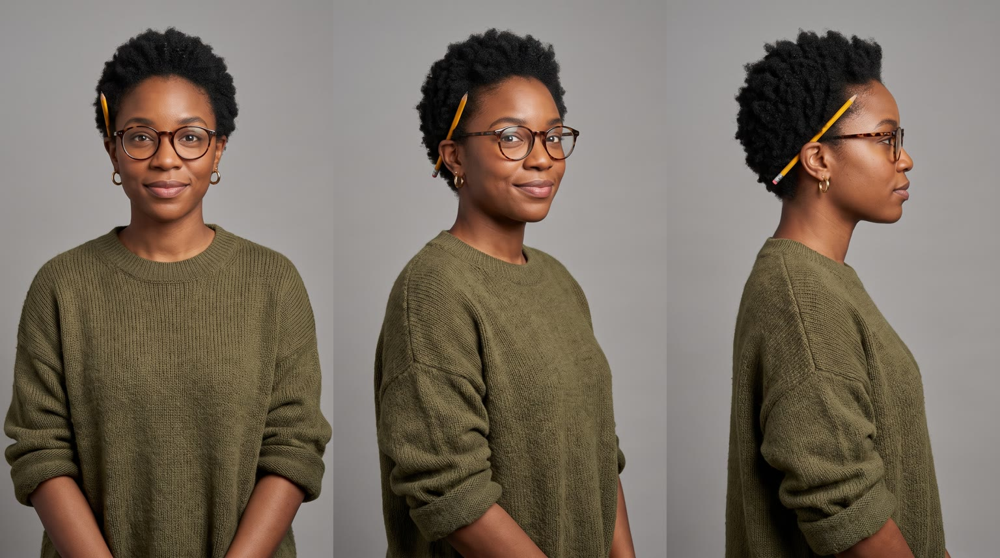
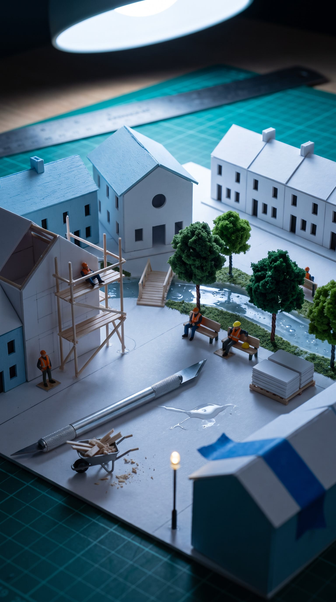
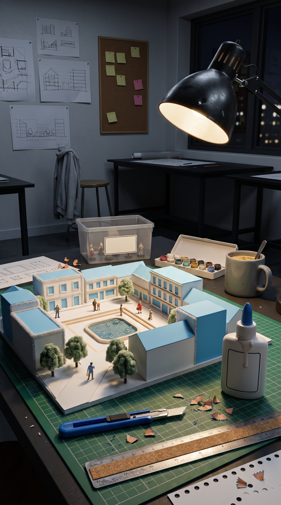
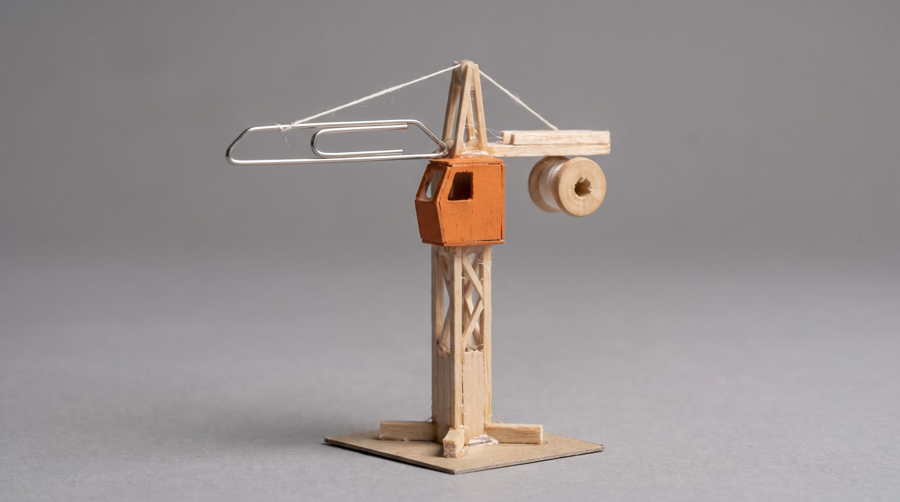
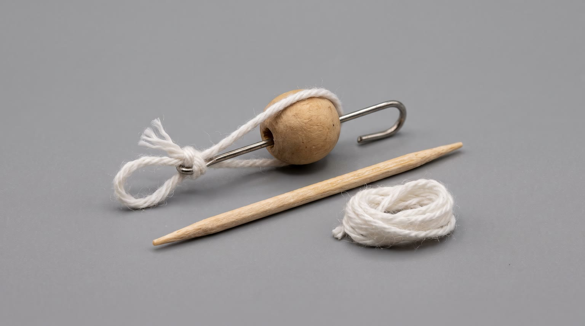

All templates · template.json · original storyboard
Miniature / diorama / tilt-shift worldminiature-01-night-buildNight Build
2am in a tiny model town. The review is at nine, the whole crew has fallen asleep on the job, and the foreman calls in the big one: {{product.name}}. Then the camera pulls back.
Fit by product type
| ingested | great | a full-size snack or beverage towering in the square, opened by the rope crew, is the concept's best gag |
| applied | great | a giant tube or jar as a monument, the crew twisting the cap like a capstan and rolling it out like paint |
| worn | good | shoes, watches, glasses and caps become a landmark the crew climbs; garments drape like a big top; very small items (rings) read as a sculpture, not a skyscraper |
| handheld | great | gadgets and bottles tower like skyscrapers and the crew levers them on |
| carried | good | the bag opens like a warehouse door; large luggage crowds the board |
| home | stretch | tabletop pieces (lamps, candles, cushions, plants) sit at the board edge like a mountain; large furniture only works beside the desk and loses the hand-set moment |
| consumable | great | the balsa crane lifts pieces out of the giant pack |
Refuses: products for children; alcohol; sleep aids or sedatives (the story is finishing a deadline through the night); products that are messy or unsafe near a paper model (open flames, liquids that must be poured out on camera)
Cast, world and props (shipped with the template)






- Riverside Commons is Amara Cole's final thesis model at the Kellerman School of Architecture: 46 hand-cut buildings at 1:87 scale on a 90 by 120 cm board. Her jury review is at 9am in Room 3B with three visiting critics.
- It is 2:10am. She has been awake for 20 hours, the resin river was poured on Tuesday and still smells faintly sweet, and the civic hall roof has fallen off twice tonight.
- Sal is one of 72 figurines from a box of Oakbridge Model Supply workers she bought in first year. He is the only one she repainted by hand, and his grey walrus mustache is a single dab of paint from a size 000 brush.
- The tiny crew builds whatever she forgets. Their rule: nothing gets finished after midnight without the foreman's say so.
- The paved square in the middle is left empty on purpose: it is the one space in the plan she has never been able to design.
Script: what each line must do
Right column is the worked example for Red Bull Sugarfree.
| Time | Speaker | Intent (template) | Example |
|---|---|---|---|
| 0.3-2.5 | sal | Fixed: Review's at nine. This town's asleep. Max 8 words. Delivery: gravelly, exasperated, into the megaphone | Review's at nine. This town's asleep. |
| 5.0-6.6 | sal | Fixed: Bring in the big one! Max 7 words. Delivery: shouted up at the sky, megaphone raised | Bring in the big one! |
| 11.6-14.0 | sal | Product line: say {{product.name}} (or its short spoken form) and the ONE benefit from product.benefits that a crew racing a 9am deadline at 2am needs most (focus, energy, comfort, grip, calm, freshness). benefit comes only from product.benefits, reworded no further than person and tense; brand spelled phonetically in the video prompt using product.phonetic Max 9 words. Delivery: proud, like unveiling a monument, hand on the product | Red Bull Sugarfree. Wide awake, no sugar. |
| 18.6-20.4 | amara | Fixed: Okay, team. One more street. Max 7 words. Delivery: soft, amused, leaning over the model with the product | Okay, team. One more street. |
| 22.6-24.6 | sal | Fixed: Nine a.m. Nailed it. Max 6 words. Delivery: satisfied, thumbs up to the lens | Nine a.m. Nailed it. |
| 27.2-29.2 | amara (off camera) | Tagline: product.tagline if the page has one, otherwise a 3 to 5 word line that ties the product to getting the big thing finished. Max 6 words. Delivery: warm, smiling voiceover | Wiiings without sugar. |
Product-adjacent props by type
| ingested | cold droplets beading on the product as big as the figurines; a figurine holding a thimble up to catch a drop |
| applied | the removed cap lying on the paving like a fallen dome; a tiny paint roller and tray beside it |
| worn | thread ropes and toothpick ladders strung up the product like a climbing wall |
| handheld | a figurine with a card clipboard checking the product like an inspector |
| carried | a stack of tiny card crates being carried out of the open product |
| home | the edge of the model board (or the floor beside the desk for large pieces), where the product rises behind the town like a mountain |
| consumable | the balsa crane parked beside the open pack, its thread hook ready |
Shots and how the product appears for each type
S01 · 0 to 2.6 s · absent
Sal stands on the edge of a dark card rooftop, megaphone raised, the sleeping tiny town blurred behind him in blue night light.
S02 · 2.6 to 4.6 s · absent
The tiny crew asleep all over the unfinished model: one slumped on scaffolding, two on a bench, one curled in a wheelbarrow; half-built houses with bare card walls.
S03 · 4.6 to 7.0 s · absent
Sal in the empty square shouts up at the sky; a giant warm shadow falls over him as something enormous descends.
S04 · 7.0 to 9.4 s · reveal
A giant real adult hand sets the full-size product down in the square (room-sized products are settled at the edge of the board); it towers over the tiny houses while the woken figurines stare up.
| ingested | a normal-size adult hand with dark brown skin just letting go of {{product.visual}}, a real full-size object, set upright (propped on end if it is flat) and closed in the centre of the square |
| applied | a normal-size adult hand with dark brown skin just letting go of {{product.visual}}, a real full-size object, set upright in the centre of the square with its cap on |
| worn | a normal-size adult hand with dark brown skin just letting go of {{product.visual}}, a real full-size object, set down in the centre of the square like a new landmark (a garment neatly folded into a block so it does not smother the houses) |
| handheld | a normal-size adult hand with dark brown skin just letting go of {{product.visual}}, a real full-size object, set upright in the centre of the square |
| carried | a normal-size adult hand with dark brown skin just letting go of {{product.visual}}, a real full-size object, set down standing and closed in the centre of the square |
| home | {{product.visual}} at its real size settled at the edge of the model board (on the desk if it fits, on the floor right beside the desk if it does not), rising behind the tiny houses like a mountain range, a normal-size adult hand with dark brown skin resting on it as she settles it into place |
| consumable | a normal-size adult hand with dark brown skin just letting go of a pack of {{product.visual}}, real full-size, set upright in the centre of the square |
S05 · 9.4 to 11.4 s · hero
On the product, three tiny crew members use the rope rig to open it, switch it on or unpack it; the moment is enormous at their scale.
| ingested | three 2 cm hand-painted figurines in orange hi-vis vests and white hard hats standing on the lid of {{product.visual}}, heaving on a thin rope tied to its opening tab, cap or wrapper edge until it cracks open with a burst of cold white mist like a geyser (a beverage) or its wrapper tears back like a curtain (food) |
| applied | three 2 cm hand-painted figurines in orange hi-vis vests and white hard hats on top of {{product.visual}}, pushing on toothpick levers around its cap like sailors at a capstan until it twists open |
| worn | three 2 cm hand-painted figurines in orange hi-vis vests and white hard hats climbing {{product.visual}} on thread ropes like a rock face, one already waving from the top |
| handheld | three 2 cm hand-painted figurines in orange hi-vis vests and white hard hats on {{product.visual}}, heaving together on a toothpick lever against its button, lid or clasp until it clicks open, on or into place |
| carried | three 2 cm hand-painted figurines in orange hi-vis vests and white hard hats hauling the zip pull or clasp of {{product.visual}} along with a thread rope, opening it like a warehouse door |
| home | three 2 cm hand-painted figurines in orange hi-vis vests and white hard hats climbing a toothpick ladder onto {{product.visual}} and heaving on a thread rope tied to its switch, knob, handle or corner until it clicks on or settles into place |
| consumable | three 2 cm hand-painted figurines in orange hi-vis vests and white hard hats heaving on a thread rope that runs over a bead pulley, hauling one piece up out of the open pack of {{product.visual}} |
S06 · 11.4 to 14.2 s · hero
Sal stands at the base of the product with one hand on it like a monument, megaphone lowered, and says the product line; the label rises above him.
| ingested | standing proudly at the base of {{product.visual}}, now open, one tiny hand resting on it like a monument, the label rising above him |
| applied | standing proudly at the base of {{product.visual}}, its cap lying beside him like a fallen dome, one tiny hand resting on it, the label rising above him |
| worn | standing proudly in front of {{product.visual}}, which lies in the square like a new landmark with tiny crew climbing it, one tiny hand resting on it |
| handheld | standing proudly at the base of {{product.visual}}, now open or switched on, one tiny hand resting on it, the logo rising above him |
| carried | standing proudly in the open mouth of {{product.visual}} like at a warehouse door, one tiny hand on its edge, the logo rising above him |
| home | standing proudly at the foot of {{product.visual}} at the edge of the board, which rises behind him like a mountain, one tiny hand resting on it |
| consumable | standing proudly at the base of the open pack of {{product.visual}}, one piece lying beside him like a monument, the label rising above him |
S07 · 14.2 to 17.0 s · background
Every window in the tiny town switches on warm amber; the crew is awake, a toy crane swings a roof into place, figurines carry card walls, the product towering over it all.
| ingested | {{product.visual}} standing open in the centre of the square, towering over it all, label facing the viewer |
| applied | {{product.visual}} standing in the centre of the square, a tiny crew polishing a card roof with a dab of it on a scrap of cloth |
| worn | {{product.visual}} lying in the square as the crew's newest landmark, figurines climbing it on thread ropes |
| handheld | {{product.visual}} standing in the centre of the square, open or switched on, towering over it all, logo facing the viewer |
| carried | {{product.visual}} standing open in the centre of the square, figurines carrying tiny card crates out of it like a warehouse |
| home | {{product.visual}} rising at the edge of the board like a mountain behind the glowing town |
| consumable | the pack of {{product.visual}} standing in the centre of the square, the balsa crane lifting one piece out of it |
S08 · 17.0 to 20.6 s · in_use
Reveal: the camera pulls back and up to show the town is a model on Amara's desk at 2am; she takes the product from the model, uses it, and speaks to the tiny crew.
| ingested | lifting {{product.visual}} out of the square and holding it open at chin height just after a sip or a bite, label facing the viewer |
| applied | lifting {{product.visual}} out of the square and smoothing a little onto the back of her hand, then holding it at chin height with the label readable |
| worn | lifting {{product.visual}} out of the square and putting it on, the product clearly in frame on her |
| handheld | lifting {{product.visual}} out of the square and using it for a moment, then holding it at chin height with the logo readable |
| carried | lifting {{product.visual}} out of the square and slinging it onto her shoulder, logo readable |
| home | reaching over to {{product.visual}} beside the model board and using it (switching it on, leaning into it or resting a hand on it), the product fully in frame |
| consumable | lifting one piece out of the pack of {{product.visual}} in the square and using it, then holding the pack at chin height with the label readable |
S09 · 20.6 to 25.0 s · absent
9am in a bright review room: the finished model on a white plinth, Sal in the foreground giving a thumbs up to the lens; behind, out of focus, Amara presents and blurred jurors applaud.
S10 · 25.0 to 30 s · hero
Morning sun through the studio window: the product in the finished model, the tiny crew resting and picnicking around its base; clean space above for the tagline.
| ingested | {{product.visual}} standing upright and open in the centre of the finished square (propped on end if it is flat), label facing the viewer |
| applied | {{product.visual}} standing upright in the centre of the finished square, cap on, label facing the viewer |
| worn | {{product.visual}} set in the centre of the finished square as its landmark, best side to the viewer |
| handheld | {{product.visual}} standing in the centre of the finished square, logo facing the viewer |
| carried | {{product.visual}} standing upright in the centre of the finished square, logo facing the viewer |
| home | {{product.visual}} at the edge of the finished board, rising behind the tiny town like a mountain in the morning light, best side to the viewer |
| consumable | the pack of {{product.visual}} standing upright in the centre of the finished square, one piece beside it, label facing the viewer |
Generation units (templated prompts)
U1 · 7 s
9:16 tilt-shift macro footage of a handmade 1:87 miniature town at night, hand-painted 2 cm figurines that move in stepped stop-motion while the camera glides smoothly. Shot 1 (0 to 2.6 s): probe-lens push-in on @Image1 (Sal, the foreman figurine) on a card rooftop, megaphone up, he says in a gravelly voice: "Review's at nine. This town's asleep." Shot 2 (2.6 to 4.6 s): high-angle tilt-shift slide over the town from @Image2, tiny crew asleep on scaffolding, a bench and in a wheelbarrow. Shot 3 (4.6 to 7 s): low angle in the empty square, Sal shouts up through the megaphone: "Bring in the big one!" and a huge soft shadow falls across him. Natural adult voice, close-miked, not sped up. Native sound: tiny snores, card creaks, rushing air. No music. No text, no signs.
U2 · 8 s · exact-risk
9:16 tilt-shift macro, handmade miniature town. Shot 1 (0 to 2.4 s): {{action.S04}}, the product from @Image1 as a real full-size object towering over the card houses, label or logo to camera; the tiny figurines stare up. Shot 2 (2.4 to 4.4 s): macro, {{action.S05}}. Shot 3 (4.4 to 8 s): low angle at the base, @Image2 (Sal), {{action.S06}}, and says proudly: "{{line.L3}}" (say the brand as {{product.phonetic}}). The product is photographically exact, keeps its shape, colours and label as @Image1, and never shrinks or changes scale. Only one of the product. Native sound: a deep monument thud, tiny gasps, a heave-ho, the product's own sound enormous at tiny scale. No music.U3 · 11 s
9:16 miniature to human scale. Shot 1 (0 to 2.8 s): high-angle tilt-shift slide over @Image1 (the model town), every tiny window switches on warm amber, the figurines wake and build in stop-motion, a toy crane swings a roof in, and {{action.S07}}. Shot 2 (2.8 to 6.4 s): one continuous pull-back and rise reveals the town is a card model on a desk at 2am; @Image2 (Amara), {{action.S08}}, and says softly: "Okay, team. One more street." Shot 3 (6.4 to 11 s): a bright review room at 9am, the finished model on a plinth, @Image4 (Sal) in sharp macro foreground gives a thumbs up to the lens and says: "Nine a.m. Nailed it." while Amara presents out of focus and blurred jurors applaud. The desk and model match @Image3; the product matches @Image5 exactly. Only one of the product. Native sound: tiny hammering, crane whirr, desk lamp buzz, applause. No music. No text.U4 · 5 s · exact-risk
9:16 tilt-shift macro pack shot in golden morning window light. Slow motion-control push toward {{action.S10}}; the real full-size product matches @Image1 exactly, in the finished miniature square from @Image2, tiny painted figurines resting and picnicking around its base, one waving slowly in stop-motion. The product does not move or change shape. Keep the top third as soft empty blur. Native sound: birds outside the window, a tiny contented sigh. No music, no text.